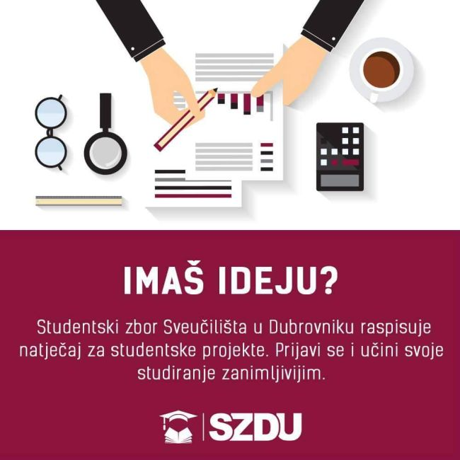

Temeljem Zakona o studentskom zboru i drugim studentskim organizacijama članak 12., stavak 3.
Studentski zbor Sveučilišta u Dubrovniku (u daljnjem tekstu SZDU) raspisuje Javni natječaj za financiranje studentskih projekata u 2016. godini (u daljnjem tekstu Natječaj).
SZDU nije obvezan u stopostotnom (100%) iznosu financirati prijavljeni projekt. Odobrena financijska sredstva odnose se na točno određenu stavku navedenu u financijskom planu,
te se ne mogu utrošiti na druge stavke.
Uvjeti prijave
Pravo sudjelovanja na Natječaju imaju svi studenti Sveučilišta u Dubrovniku.
Obavezna dokumentacija
- Pravilno popunjen Obrazac za prijavu studentskih projekata
- Pravilno popunjen Troškovnik studentskih projekata
- Potvrda o statusu studenta voditelja projekta
Neobavezna dokumentacija
- Podaci o prijašnjim aktivnostima
- Diplome, potvrde ili priznanja koje potvrđuju stečenost korisnih znanja i iskustava
- Životopis voditelja projekta
Fakultativnu dokumentaciju ovog dijela čine i mišljenja, preporuke ili pohvalnice izdane od strane sveučilišnih i državnih institucija, nevladinih udruga, međunarodnih organizacija,
eminentnih akademskih, gospodarstvenih i drugih stručnjaka i tome slično.
Prijava na natječaj smatra se potpunom ako sadrži sve obavezne elemente prijave dostavljene u zadanom roku.
Nepotpune i nepravodobne prijave, kao i prijave pristigle izvan roka podnošenja prijava neće se razmatrati.
Rokovi za podnošenje prijava
Natječaj je otvoren od 25. ožujka 2016. godine u 12:00 sati do 15. travnja 2016. godine u 12:00 sati.
Prijave se podnose putem e-maila SZDU-a (studzborunidu@gmail.com) pod nazivom „JAVNI NATJEČAJ SZDU-a ZA FINANCIRANJE STUDENTSKIH PROJEKATA U 2016. GODINI.
Objava rezultata natječaja
Privremeni kao i konačni rezultati Natječaja te ostale relevantne informacije bit će objavljene na web stranici SZDU-a (www.szdu.hr) najkasnije do 19. travnja 2016. godine.
Pravo na žalbu
Prijavitelj projekta može podnijeti žalbu na preliminarne rezultate Natječaja, u roku 48 sati od objave istih, putem službenog e-maila SZDU (studzborunidu@gmail.com).
Napomene
(1) Korisnik financiranja mora poduzeti sve potrebne mjere da objavi činjenicu da je davatelj financijskih sredstava financirao ili sufinancirao program ili
projekt, osim ako davatelj financijskih sredstava ne odluči drukčije.
(2) Korisnik financiranja će navesti projekt i financijski doprinos davatelja financijskih sredstava u svim
informacijama za krajnje korisnike projekta te u svojim privremenim i godišnjim izvještajima i svim kontaktima s medijima.
(3) Korisnik sredstava obvezuju se istaknuti logo Studentskog zbora Sveučilišta u Dubrovniku tijekom provedbe programa na za to predviđenim mjestima osim ako davatelj financijskih sredstava ne odluči drukčije.
(4) Iznos financijskih sredstava koji je dodijeljen po projektu je u bruto iznosu.
(5) Voditelj projekta je dužan najkasnije 7 dana po završetku projekta podnijeti završni izvještaj o provedenom projektu zajedno s financijskom tablicom.
(6) SZDU može naknadno zatražiti potvrdu o statusu studenta svih ostalih sudionika na projektu.
(7) Upite vezane za natječaj moguće je poslati na e-mail SZDU-a (studzborunidu@gmail.com).
Obrazac možete preuzeti ovdje, a troškovnik
ovdje.